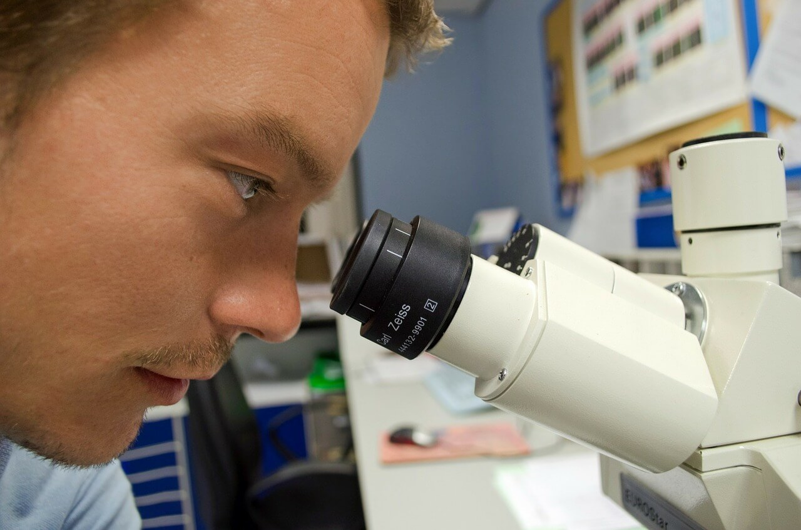

Explore together
Come join us at the Community Science Museum where we’re committed to making science accessible to all.
For kids
Are you a young person looking to learn more about science? Come on down to our museum, there’s plenty to see and do.
You can learn about Newtonian physics from our bumper swing, or why not travel back in time and meet our resident Woolly Mammoth? Our exhibits are designed to be accessible for interested minds, so make sure you come ready to learn and explore.
For teachers
As a community-driven museum, we want to work with schools to create places of learning and exploring. Our team are on hand to give your students guided tours of the museum, teach them in our learning laboratory, and provide great video presentations that will excite and inspire them.
Please get in touch with us here to find out more about our facilities and to arrange a time to bring your students through for a visit.
Researchers
Are you looking to get involved with our team of researchers and academics? Our museum offers various ways for you to use our resources and contribute towards them. We have online records, laboratory space, and a working relationship with a number of universities around the country.